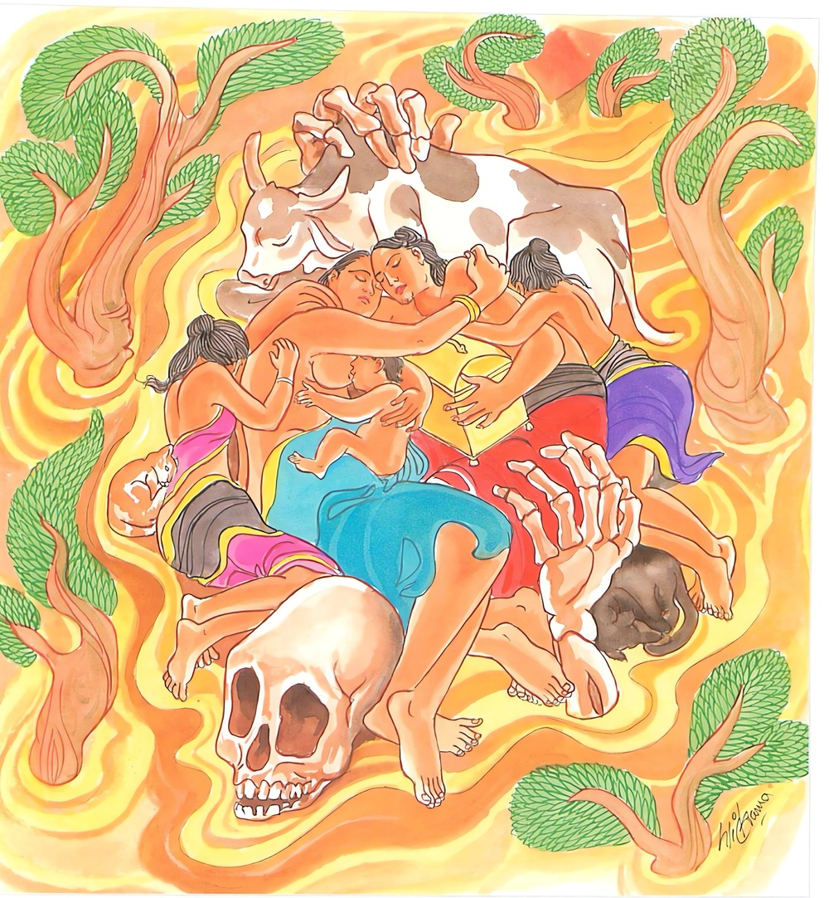

20-11 කිසාගෝතමී
මෙම කතාව ධම්මපද අටුවාවෙන් ද කියවන්න.
තං පුත්තපසුසම්මත්ත, බ්යාසත්තමනසං නරං
සුත්තං ගාමං මහොඝො’ව මච්චු ආදාය ගච්ඡති.
දරුවන් ද ගවමහිසාදීන් ද කරණ කොට (මා දරුවෝ රූ ඇත්තෝ ය බලැත්තෝ ය, නැණැත්තෝ ය , හැම කටයුත්තෙහි දක්ෂයෝ යැ යි මෙසේ දරුවන් නිසා ද , (නොලත් දෑ පැතීම් විසින් ද ලත් දැයෙහි ගිජු වීම් විසින් ද පස්කම්හි) විශේෂයෙන් ලග්න වූ සිත් ඇති ඒ පුරුෂයා නිදන ගමක් (නිදිගත් ගම් වැසියන් සමූහයක්) මුහුදට ඇදැ ගෙන යන මහ වතුරක් මෙන් මරණය තෙම (අපාය මුහුදට) හැරැ ගෙන යයි.

සම්මා සම්බුදු රජානන් වහන්සේ සැවැත් නුවර දෙව්රම් වෙහෙර වැඩ වසන සේක් දවසක් කිසාගෝතමිය අමතා “ගෝතමි! තිට නො මළ කෙනෙකු ඇති ගෙයකින් අබ අහුරක් ලැබුනා දැ”යි අසා වදාළ සේක. එ කල්හි ඕ තොමෝ “ස්වාමීනි! මේ මුළුගම ජීවත් වන්නවුනට වඩා මළාහු ම ඉතා බොහෝ ය”යි කිවු ය. ඉක්බිති බුදුරජානන් වහන්සේ “ගෝතමි! තී මාගේ පුතු මළේ ය යි සිතහි, මරණය සියලු සතුන් පිළිබඳ ව සිදුවන එකාන්ත ධර්මයෙකි, මරණය සියලු සතුන් මැඩ සිටියේ ය, මරණයට යටත් නො වන එක ද සත්ත්වයෙක් ලෝකයෙහි කිසි තැනෙක නැත්තේ ය, මරු, සියලු සතුන් නො ද පිරිපුන් අදහස් ඇති ව සිටිය දී ම, යම් කිසිවක් මහත් දිය සැඩ පහරකින් ඇද ගෙණ යන්නා සේ ඇද ගෙණ ගොස් අපාය නැමැති සමුද්රයෙහි බහා ලන්නේ ය”යි වදාරා මෙ ධර්මදේශනාව කළ සේක.
තං පුත්තපසුසම්මත්තං ව්යාසත්තමනසං නරං,
සුත්තං ගාමං මහොඝොව මච්චු ආදාය ගච්ඡතීති.
දරුවන් හා ගොමහිෂාදින් නිසා තදින් මත් වූ වෙසෙසින් ලැගුනු සිත් ඇති මිනිසා, නිදිගත් ගමක් මුහුදට ඇද ගෙණ යන මහ දියවතුරක් මෙන් මරණය තෙමේ ඇද ගෙණ යන්නේ ය.
තං පුත්තපසුසම්මත්තං ව්යාසත්තමනසං නරං = දරුවන් හා ගොමහිෂාදීන් නිසා තදින් මත් වූ වෙසෙසින් ලැගුනු සිත් ඇති මිනිසා.
යමෙක් උස්මහත්කම් හැඩහුරුකම් පැහැසටහන් හයිබල නුවණ ඈ යන මෙයින් යුත් තමන්ගේ දූ පුතුන් දෙස බලා “මාගේ දූ පුත්තු උස්මහත්කමින් හැඩහුරුකමින් පැහැසටහනින් හයිබලයෙන් නුවණින් අන් දරුවන් අබිබවා සිටිති, සියලු කටයුත් වල දක්ෂ වෙති, එ මතු ද නො වේ, මාගේ ගොමහිෂාදීහු ද හැඩහුරුකමින් ඇඟමසින් තරබාරුකමින් යුක්ත වෙති, බර ඉසිලීමෙහි ශක්තිමත් ය, මාගේ දෙන්නු බොහෝ කිරි ඇතියහ” යනාදීන් දූ පුතුන්ගේ හා ගොමහිෂාදීන්ගේ මහත්කම් බලා මත් වූයේ ද මත් වන්නේ ද හේ පුත්තපසුසම්මත්ත නම්.
රන් රිදී මසු කහවණු ඈ අතුරෙහි හෝ සිවුරු පිරිකර ඈ අතුරෙහි හෝ කිසිවක් ලබා එයින් සෑහීමට නො පැමිණ වඩ වඩාත් එය ලැබීමෙහි ඇලුනේ, ඇස් - කන් - නාස් ඈ දොරටුවලින් ගතයුතු වූ අරමුණු අතුරෙහි. නන්වැදෑරුම් කුදු - මහත් පිරිකර අතුරෙහි යමෙක් යමෙක් ලද ද එයින් සෑහීමට නො පැමිණ නො ලද දැය පැතීම් විසින් ලද දැයෙහි ඇලීම් විසින් මත් වූයේ ද මත් වන්නේ ද බ්යාසත්තමනස නම්.
සුත්තං ගාමං මහොඝො ඉව මච්චු ආදාය ගච්ඡති = නිදිගත් ගමක් මුහුදට ඇද ගෙණ යන මහදියවතුරක් මෙන් මරු තෙමේ ඇද ගෙණ යන්නේ ය.
දූ පුතුන් නිසා ගොමහිෂාදීන් නිසා රන් රිදී මසු කහවණු ඈ නිසා පා සිවුරු පිරිකර නිසා මත් වූ, ඒ කිසිවෙක් ලද ද එයින් සතුටට නො පැමිණ වඩ වඩාත් එය ලැබීමෙහි පැතුම් ඇති මිනිසා මෘත්යුමාර තෙමේ දෙ තුන් යොදුන් පැතිර සිටි ගැඹුරු වූ මහත් දිය කඳක් නිදිගත් ගම්වැස්සන් බලු බලලුන් කිසිවකුත් ඉතිරි නො කොට මුහුදට ඇද ගෙණ යන්නා සේ අපායයට ඇද ගෙණ යන්නේ ය යි මෙයින් වදාළ සේක. [1]
ධර්මදේශනාවගේ අවසානයෙහි කිසාගෝතමී තොමෝ සෝවන් පලයෙහි පිහිටියා ය. ධර්මදේශනා තොමෝ පැමිණ සිටි පිරිසට ද වැඩ සහිත වූ ය.
කිසාගෝතමී වස්තුව නිමි.
-
4-3 ‘සුන්තං ගාමං මහොඝොව’ යනු බලනු. ↑